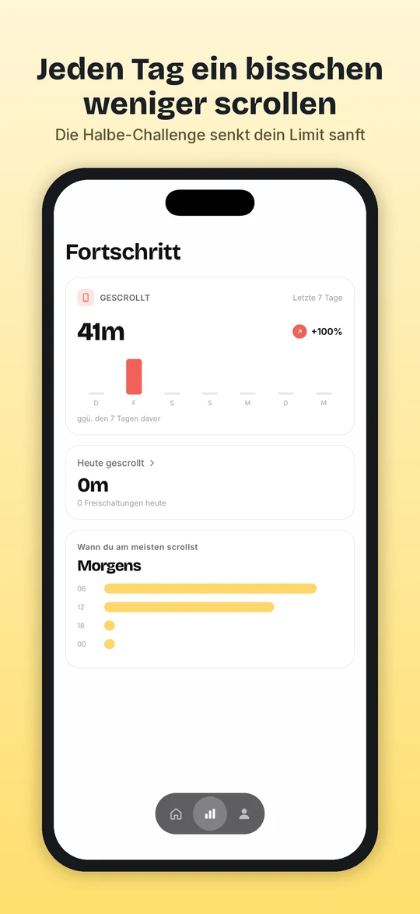
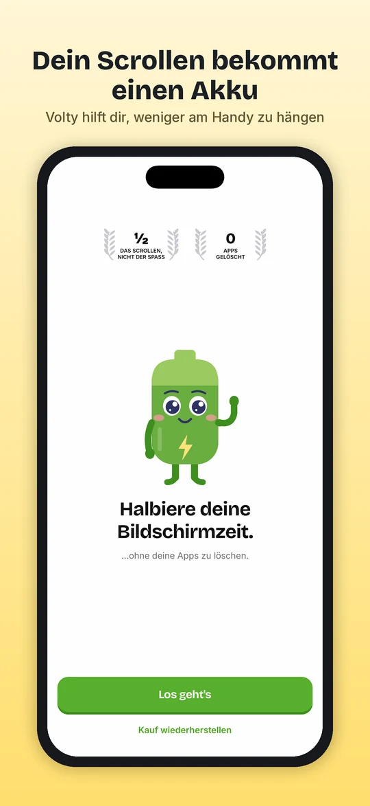

Bildschirmzeit halbieren – Schritt für Schritt
Die Bildschirmzeit zu halbieren klingt nach einem großen Schritt. Muss es aber nicht sein: Wer jeden Tag nur ein paar Minuten einspart, merkt kaum einen Unterschied und hat nach ein paar Wochen trotzdem Stunden zurückgewonnen.
Der Plan in fünf Schritten
- Schau unter Einstellungen → Bildschirmzeit nach deinem Tagesdurchschnitt. Das ist dein Startwert.
- Setz dir die Hälfte davon als Ziel, nicht null.
- Senke dein Limit täglich um 5 bis 15 Minuten statt auf einen Schlag.
- Behalte, was dir Spaß macht, und streich zuerst das gedankenlose Scrollen.
- Bewerte den Wochentrend, nicht einen einzelnen schlechten Tag.
Die Halbe-Challenge in ScrollVolt
ScrollVolt nimmt dir das Rechnen ab. Du wählst das Tempo – 5, 10 oder 15 Minuten pro Tag – und die App senkt dein Tageslimit jeden Tag um diesen Wert, bis du nur noch halb so viel scrollst wie heute. Deine ausgewählten Apps teilen sich dabei einen Scroll-Akku, der sich über den Tag wieder auflädt. Freigeschaltet wird, indem du ihn auf die gewünschten Minuten ziehst, und Fokus-Sessions laden ihn doppelt so schnell. Auf dem Fortschrittsbildschirm siehst du das Akku-Diagramm von heute, deinen Wochentrend und jede einzelne Scroll- und Fokus-Session. So erkennst du die Veränderung, statt sie nur zu ahnen.


Häufige Fragen
Warum halbieren und nicht ganz aufhören?
Null hält kaum jemand lange durch. Mit der Hälfte gewinnst du viel Zeit zurück und behältst die Seiten deines Handys, die dir wirklich etwas bringen.
Wie lange dauert es, die Bildschirmzeit zu halbieren?
Das hängt von deinem Startwert und deinem Tempo ab. Von zwei Stunden täglich auf eine kommst du mit 5 Minuten pro Tag in etwa 12 Tagen, mit 15 Minuten in etwa 4.
Muss ich dafür Apps löschen?
Nein. ScrollVolt begrenzt die Apps, die du auswählst, ohne sie zu löschen.
ScrollVolt auf dem iPhone testen
ScrollVolt Premium ist ein Jahresabo mit 3 Tagen kostenloser Testphase, das du jederzeit in den Einstellungen deines Apple Accounts kündigen kannst. Lieber einmal zahlen? Dann gibt es die einmalige Lebenslang-Option.
Laden imApp Store